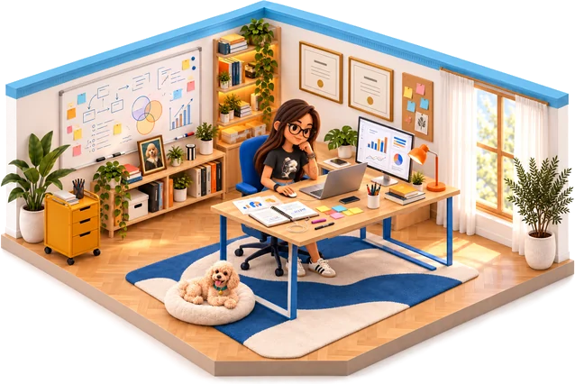

2016–2020 · UPB
Ingeniería Industrial y de Sistemas
Licenciatura · Universidad Privada Boliviana.
 datrio
← Volver a mi universo
datrio
← Volver a mi universo
Soy Sandra Abasto. Mi formación en ingeniería, datos y análisis de gestión alimenta lo que construyo y comparto en clase.

Licenciatura, maestría y diplomados en la Universidad Privada Boliviana.
Licenciatura · Universidad Privada Boliviana.
Master in Business Administration · Universidad Privada Boliviana.
Diplomado · Universidad Privada Boliviana.
Diplomado · Universidad Privada Boliviana.
Diplomado · Universidad Privada Boliviana.